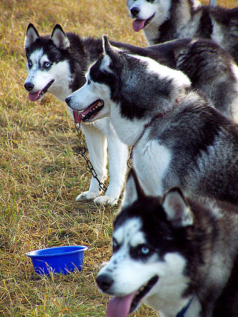

A kutya vagy eb (Canis lupus familiaris) ujjon járó emlős ragadozó állat, a szürke farkas (Canis lupus) egy már kihalt alfajának háziasított formája.
Az egyetlen olyan emlős állatfaj, amely tudományos nevében megkapta a familiaris, azaz a családhoz tartozó jelzőt. A kutyákat szokás a társállatok sorában emlegetni.
| Ország: | Törzs: | Altörzs: | Főosztály: | Osztály: | Alosztály: | Rend: |
|---|---|---|---|---|---|---|
| Állatok | Gerinchúrosok | Gerincesek | Négylábúak | Emlősök | Elevenszülő emlősök | Gerinchúrosok |

A kutya szavunk eredetére több feltételezés van. A finnugristák szerint hangutánzó eredetű állathívogató szóból ered. Erre mutat sok
alakváltozata: kucsa, kucsu, kucsó, kucó. A magyartól függetlenül kialakult, hasonló kutyahívogató szavak például a szerb és horvát kuci,
az ukrán kucsu kucsu, az oszmán-török kuçukuçu, a vend kujsi, kujsek és a szlovén kuža.
A szó protoindoeurópai rekonstrukciója kwōn. Az indoeurópai nyelvek közül például a hindi kutta, a török nyelvekből az ótörök kuça és kançık közös indoeurópai-török eredetre utalnak.
Az eb szó ismét finnugrista álláspont szerint ugor kori örökségünk. A másik két ugor nyelvben (manysi és hanti) a kutya neve emp. Az eb szó ma már csak hivatalos és szaknyelvi szóként („ebadó”, „ebtenyésztő”), illetve egyes kifejezések, szólások és közmondások elemeként használatos („ebadta”, „ebihal”, „ebugatta”, „eben gubát cserél”, „ebek harmincadjára vet”, „ebül szerzett jószág ebül vész”, „eb ura fakó” stb.).
Ugyanakkor gyakorlatilag az összes török nyelvben ut, et vagy it a kutya.

A kutya a farkas egy mára már kihalt alfajának háziasításával (domesztikációjával) jött létre, amint azt mitokondriális DNS-adatok is bizonyítják. A háziasítás kezdetének időpontját tudományos viták övezik, de általában 10 000–100 000 évvel ezelőttre teszik, vagyis a kutya a középső kőkorszak vagy az újkőkorszak óta társa az embernek. A háziasítás kezdeteiről semmilyen dokumentum sem maradt fent, ezért főképp feltételezésekre, illetve régészeti leletekre hagyatkozhatunk. A németországi Oberkassel környékén feltártak egy hozzávetőleg 33 ezeréves kutya-állkapcsot, amely a legkorábbi ismert háziasított állat maradványa lehet, illetve Szibériában egy koponyát. A két lelet azt a feltételezést támasztja alá, hogy a domesztikáció egyszerre több helyen párhuzamosan ment végbe. Mivel a kutya és az ember több tízezer éve együtt él, emiatt gyakran közös genetikai nyomásnak voltak kitéve, ezért több hasonló genetikai változást lehet felfedezni a két faj fejlődésében.
A Kynológiai Világszervezet hivatalosan kilenc önálló őshonos magyar kutyafajtát tart nyilván: puli, pumi, mudi, kuvasz, komondor, rövidszőrű-, és drótszőrű magyar vizsla, magyar agár, erdélyi kopó. Ezeknek a magyar kutyafajtáknak kitűnő az örökítőképességük, megőrzésük nemzeti érdek. A fajták tudományos szelektálása és nemesítő tenyésztése csak a 19. század második felében kezdődött.